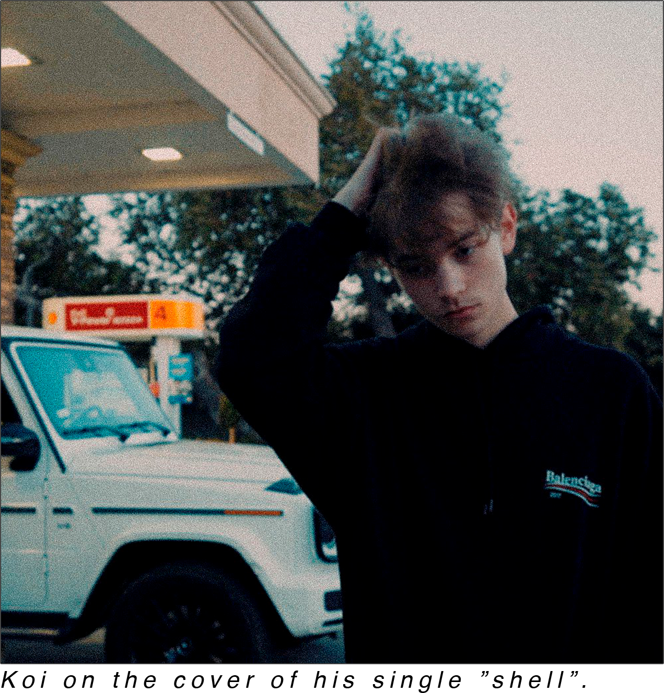

WHO IS KOI?

Who is koi? Koi, real name Coyes, is a young and talented singer/producer from Huntsville, Alabama. Despite his 19 years of age he has already gotten a good amount of praise from magazines such as Lyrical Lemonade and ELEVATOR Magazine. He has also been featured on songs with artists like TyFontaine and Savage Ga$p. As if that wasn’t enough, he has also been shooting music videos with the well renowned JakeTheShooter and the creative collective Overcast.
In an Instagram Q&A he held a while back, he was asked by a fan, how he originally got into music – to this Koi simply answered:
Koi began his music career back in 2017, when started posting self-produced beats and songs onto the free platform SoundCloud. Despite not having money for promotion, he rapidly gained quite a big following. Koi quickly found a very unique hip-hop sound, which can be heard in songs like "hi" and "Ysl" – this was a fresh breath of air to the industry, that a lot of people were really intrigued by.
So far, the young artist has released 3 projects: 2004, I do my best <3 and before it’s too late. And seeing as Koi’s numbers keep rising, it wouldn’t be surprising to see him be part of the mainstream in a couple of years.